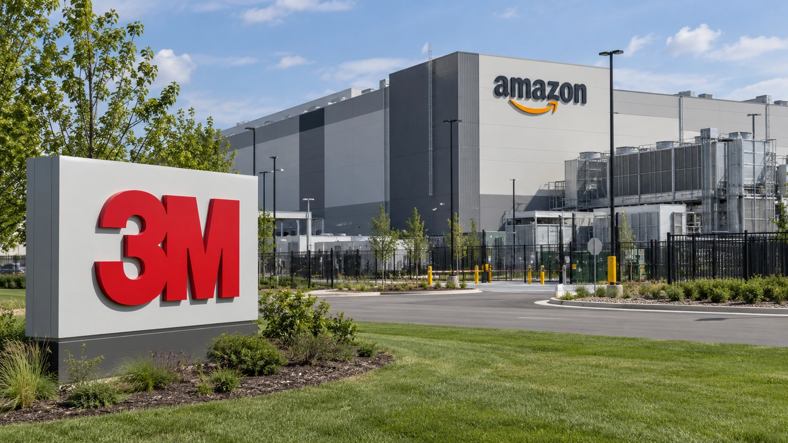

3M's Amazon Deal Puts Optical Materials in the AI Supply Chain
3M is tying potential equity issuance to Amazon purchases of data-center components, showing how AI infrastructure spending reaches industrial suppliers.

Industrial materials producer 3M has expanded its relationship with Amazon, granting an Amazon subsidiary warrants to buy up to 3.16 million 3M shares. The arrangement, announced October 19, links much of the potential equity stake to purchases of optical connectivity and other products for data centers.
The deal draws attention to a less visible segment of the AI infrastructure economy. Chips, servers and electricity dominate discussions of investment, but optical materials and connections are also needed to move information through large computing facilities.
What the warrants actually mean
Under the arrangement, Amazon has the right, but not the obligation, to acquire shares at an exercise price of $164.89 over a seven-year period. According to Reuters, roughly 85% of the warrant shares are tied to purchase milestones that reach $6 billion in cumulative spending. These are potential future purchases, not revenue already recorded by 3M.
At the stated exercise price, buying all 3.16 million shares would cost roughly $521 million. That share-purchase amount is distinct from the $6 billion procurement milestone. Vesting provisions determine which rights Amazon earns, while market conditions determine whether exercising them becomes attractive.
Why data center connectivity matters
AI computing facilities require fast and dependable links among processors, storage systems and network switches. Growing capacity can create demand for components beyond graphics processors. For a diversified manufacturer such as 3M, specialized products for computing infrastructure represent a potential source of incremental sales.
For Amazon, an equity-linked supplier agreement can create longer-term alignment without establishing a fixed delivery schedule for every component. The business impact depends on actual procurement volumes, margins, competition and the reliability of the underlying technology.
A materials supplier participates differently from a cloud operator
The investment question for a supplier is how demand reaches its own product and margin, rather than how quickly the customer's entire data-center budget grows. A cloud provider's capital program includes buildings, electricity infrastructure, servers, networking and other equipment. Only the portion requiring the supplier's materials is relevant to that supplier's potential revenue. Applying the customer's total spending growth directly to 3M would therefore overstate what the agreement establishes.
Optical connections also sit within a larger system. Their commercial value depends on reliable performance in the equipment and conditions for which they are selected. Qualification, manufacturing consistency and the ability to deliver at the required scale can matter alongside a component's technical characteristics. The announcement does not provide enough product-level economics to calculate the resulting contribution to 3M's earnings.
A supply relationship can still be significant without a disclosed revenue guarantee. It can identify a customer need and a route into a growing installation base. But the contract's duration, minimum purchasing commitments, pricing and expected delivery profile would be needed before converting that strategic position into a financial forecast. A reference to a large customer is not a substitute for those terms.
For a diversified industrial company, the size of the opportunity also needs to be compared with the rest of the business. A new product application can grow quickly from a small starting point while making a limited near-term difference to company-wide results. Investors need segment disclosures and management's quantified expectations to assess that scale, rather than treating every AI-related agreement as equally material.
The relevant follow-up would connect the agreement to actual orders, deliveries and margins. It would also distinguish demand that is incremental from business already included in earlier expectations. That approach preserves the significance of the customer relationship while avoiding an unsupported estimate of its earnings effect. The reported agreement itself does not disclose all of those inputs.
What investors should monitor
Reuters reported that 3M stock rose more than 5% in extended trading after the announcement. That reaction illustrates enthusiasm for businesses exposed to AI expansion, but it does not measure the contract's eventual profits.
Investors will need to follow reported data-center-related sales, capital requirements and the pace at which warrant milestones are reached. A large headline commitment is meaningful only to the extent that purchases are completed and 3M converts them into profitable operating income.
Suppliers can benefit from construction spending, but sustainable returns depend on what customers ultimately earn from the capacity they build.
Sources and methodology
Based on reporting from October 19, 2026. Calculations are illustrative and estimates are attributed. The cover is a user-supplied AI-generated editorial illustration, not documentary evidence of a person, location or event.